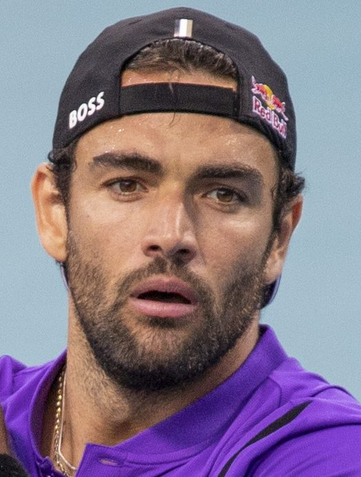

意大利2-1击败韩国 晋级戴维斯杯半决赛
世界排名第139位的权纯雨击败科博利后，贝雷蒂尼与瓦瓦索里赢下决胜双打。

2026年11月25日（星期三），戴维斯杯三连冠得主意大利队在博洛尼亚展览中心（BolognaFiere）以2-1击败韩国队，晋级半决赛。马泰奥·贝雷蒂尼与安德烈亚·瓦瓦索里在决胜的双打中以7-6（7-2）、7-6（13-11）战胜权纯雨（Soonwoo Kwon）和郑泫（Hyeon Chung），并在第二盘挽救了四个盘点。
权纯雨击败法网亚军科博利
洛伦佐·穆塞蒂为东道主拿下第一分。据《韩国先驱报》报道，这位世界排名第27位的选手用时90多分钟，以6-0、7-6（7-5）战胜排名第787位的洪性成（Hong Seong-chan）。

韩国队随后由世界排名第139位的权纯雨扳平比分。他在先丢一盘的情况下，以3-6、7-6（7-3）、7-6（7-5）击败世界排名第7、2026年法网亚军弗拉维奥·科博利，全场用时2小时50分钟。在决胜盘抢七中，权纯雨一度以1-3落后，随后在最后八分中拿下六分。
据Tennis Majors报道，科博利赛后表示：“他从第二盘开始打出了一场不可思议的比赛。”他还说：“这里没有排名，只有两支为同一个目标而战的球队。”
双打决定胜负
单打获胜大约20分钟后，权纯雨再次上场，搭档2018年澳网四强选手郑泫出战双打。首盘双方均保住了全部发球局，贝雷蒂尼与瓦瓦索里在抢七中以7-2胜出。

第二盘同样进入抢七。韩国组合手握四个盘点，但意大利组合全部化解，并在比分来到11-11之后，把握住第三个赛点，以13-11拿下比赛，全场用时1小时54分钟。
据JKN报道，权纯雨赛后说：“我没有感到任何压力。我想我很久以来第一次真正享受了比赛。”
意大利连胜达到15轮
这场胜利使意大利队在戴维斯杯的不败纪录延续到15轮。由队长菲利波·沃兰德里率领的意大利队将于2026年11月27日（星期五）在半决赛中迎战捷克队。据ATP报道，捷克队于周二以2-0击败加拿大队。
这是韩国队首次打进戴维斯杯八强，距离该国1960年首次参赛已有66年。韩国队中没有单打或双打世界排名前100的球员，却在三场比赛中与东道主打出了五个抢七。